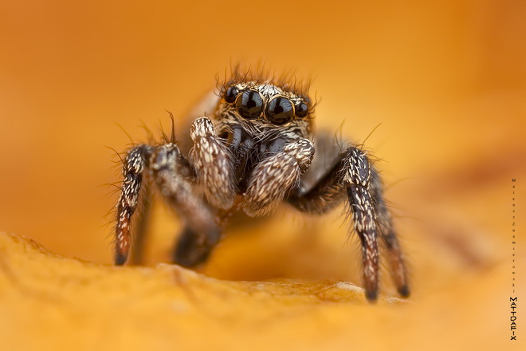

Opis:
Skakun arlekinowy to mały pająk. Samice są nieco większe od samców, ale nawet one nie osiągają długości jednego centymetra. Ciało tego pająka jest zwarte, a czarno-białe kolory układają się bardzo charakterystyczny wzór. Para dużych oczu sąsiaduje z licznymi, mniejszymi gałkami ocznymi. Pająk ma standardowo sześć par odnóży, z czego cztery służą mu do poruszania się. Skakuny mają doskonały wzrok, są szybkie i bardzo inteligentne. Często polują na dużo większe od siebie owady, które są w stanie wypatrzeć z odległości nawet 10 centymetrów. Zaczajają się na swoją ofiarę, a kiedy są już blisko, wykonują skok w jej kierunku. Badania nad skakunami dowiodły, że te małe pająki przez całe życie doskonalą strategię polowania i uczą się na własnych błędach.
Ciekawostki:
Skakun arlekinowy skacze na duże odległości, które przekraczają nawet 25 razy długość jego ciała.
Skakun potrafi zbudować sieć, ale służy ona jako schronienie podczas niepogody oraz dla jaj i młodych.